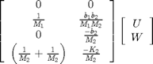
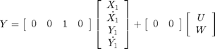
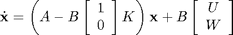
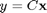
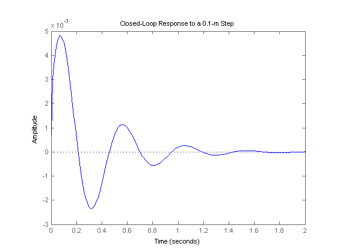

Suspension: State-Space Controller Design
Key MATLAB commands used in this tutorial are: ss , step
Contents
From the main problem, the dynamic equations in state-space form are the following where Y1 = X1 - X2.
(1)![$$
\left[ \begin{array}{c} \dot{X_1} \\ \ddot{X_1} \\ \dot{Y_1} \\ \ddot{Y_1} \end{array} \right] =
\left[ \begin{array}{cccc}
0 & 1 & 0 & 0 \\
\frac{-b_1 b_2}{M_1 M_2} & 0 & \left[ \frac{b_1}{M_1} \left( \frac{b_1}{M_1}+\frac{b_1}{M_2}+\frac{b_2}{M_2} \right)-\frac{K_1}{M_1} \right] & \frac{-b_1}{M_1} \\
\frac{b_2}{M_2} & 0 & -\left( \frac{b_1}{M_1}+\frac{b_1}{M_2}+\frac{b_2}{M_2} \right) & 1 \\
\frac{K_2}{M_2} & 0 & -\left( \frac{K_1}{M_1}+\frac{K_1}{M_2}+\frac{K_2}{M_2} \right) & 0
\end{array} \right]
\left[ \begin{array}{c} X_1 \\ \dot{X_1} \\ Y_1 \\ \dot{Y_1} \end{array} \right] +
$$](Content/Suspension/Control/StateSpace/html/Suspension_ControlStateSpace_eq41358.png)
(2)
(3)
For the original problem and the derivation of the above equations and schematic, please refer to the Suspension: System Modeling page.
We want to design a feedback controller so that when the road disturbance (W) is simulated by a unit step input, the output (X1-X2) has a settling time less than 5 seconds and an overshoot less than 5%. For example, when the bus runs onto a 10 cm high step, the bus body will oscillate within a range of +/- 5 mm and will stop oscillating within 5 seconds.
The system model can be represented in MATLAB by creating a new m-file and entering the following commands (refer to main problem for the details of getting those commands). We need to define the A, B, C, D matrices by entering the following into the m-file:
m1 = 2500; m2 = 320; k1 = 80000; k2 = 500000; b1 = 350; b2 = 15020; A=[0 1 0 0 -(b1*b2)/(m1*m2) 0 ((b1/m1)*((b1/m1)+(b1/m2)+(b2/m2)))-(k1/m1) -(b1/m1) b2/m2 0 -((b1/m1)+(b1/m2)+(b2/m2)) 1 k2/m2 0 -((k1/m1)+(k1/m2)+(k2/m2)) 0]; B=[0 0 1/m1 (b1*b2)/(m1*m2) 0 -(b2/m2) (1/m1)+(1/m2) -(k2/m2)]; C=[0 0 1 0]; D=[0 0]; sys=ss(A,B,C,D);
Designing the full state-feedback controller
First, let's design a full state-feedback controller for the system. Assuming for now that all the states can be measured (this assumption is probably not true but is sufficient for this problem), the schematic of the system is shown below.

The characteristic polynomial for this closed-loop system is the determinant of (sI-(A-B[1,0]'K)). Note that it's not sI-(A-BK) because the controller K can only control the force input u but not the road disturbance W. Recall that our B matrix is a 4 x 2 matrix, and we only need the first column of B to control U.
For this example, we have to use integral action to achieve zero steady-state error, so we add an extra state which is int(X1-X2) = int(Y1). In reality the bus will eventually reach an equilibrium that yields a zero steady-state error. The new states are X1, X1_dot, Y1, Y1_dot, and Y2. Also the state-space matrices, A, B, and C, become the following after the addition of the new state.
Aa=[0 1 0 0 0
-(b1*b2)/(m1*m2) 0 ((b1/m1)*((b1/m1)+(b1/m2)+(b2/m2)))-(k1/m1) -(b1/m1) 0
b2/m2 0 -((b1/m1)+(b1/m2)+(b2/m2)) 1 0
k2/m2 0 -((k1/m1)+(k1/m2)+(k2/m2)) 0 0
0 0 1 0 0];
Ba=[0 0
1/m1 (b1*b2)/(m1*m2)
0 -(b2/m2)
(1/m1)+(1/m2) -(k2/m2)
0 0];
Ca=[0 0 1 0 0];
Da=[0 0];
sys=ss(Aa,Ba,Ca,Da);
Actually, there is a shortcut for MATLAB to achieve the same result.
Aa = [[A,[0 0 0 0]'];[C, 0]]; Ba = [B;[0 0]]; Ca = [C,0]; Da = D; sys=ss(Aa,Ba,Ca,Da);
Add the above MATLAB code into the m-file. In this case, we treat the problem like a PID controller design. The integral control is obtained from the new state. The proportional control is obtained from a gain on Y1 or X1-X2. The direct derivative control of the output isn't possible, since derivative of Y1 or X1-X2 isn't a state. Instead we use the derivative of X1, which is available for feedback. (While X1 maybe hard to measure, X1_dot could be obtained by integrating the output of an accelerometer mounted on the bus.) It is similar to adding more damping to the velocity of the oscillation of the bus suspension. Add the following MATLAB code for controller K in the m-file:
K = [0 2.3e6 5e8 0 8e6]
K =
0 2300000 500000000 0 8000000
We arrived at this value of the K, matrix by trial and error, adjusting the gain for derivative of X1, Y1 and integral of Y1, as previously mentioned.
Plotting the closed-loop response
Looking at the schematic above again, we see that after adding the K matrix into the system, the state-space equations become:
(4)
(5)
We can now obtain the closed-loop response by simply adding the following code into the m-file. Note that we need to multiply B matrix by 0.1 to simulate the 0.1-m high step disturbance.
t = 0:0.01:2;
sys_cl = ss(Aa-Ba(:,1)*K,-0.1*Ba,Ca,Da);
step(sys_cl*[0;1],t)
title('Closed-Loop Response to a 0.1-m Step')
 From the plot we see that the percent overshoot and settling time requirements are satisfied. Moreover the steady-state error approaches zero as well. Therefore, we will determine that the response is satisfactory. Feel free to play around with the gain for matrix K.